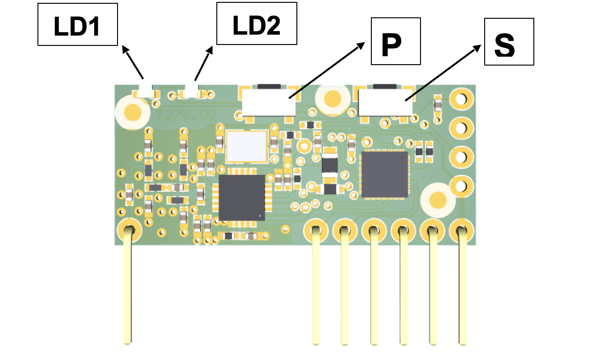

Telecomandi
Sulla centrale è integrata una ricevente multifrequenza in grado di memorizzare fino a 40 codici fissi o Rolling Code.

Registrazione di un radiocomando
La procedura di registrazione consente di associare un tasto del radiocomando ad un canale della ricevente. La ricevente ha due canali:
Canale 1: dedicato alla funzione PP (Passo-Passo)
Canale 2: dedicato al pilotaggio dell’uscita CH2 RADIO
Per procedere alla registrazione premere il tasto P.
Il led relativo al canale 1 inizia a lampeggiare, per selezionare il canale 2 premere nuovamente il tasto P.
Dopo aver selezionato il canale desiderato, premere il tasto del radiocomando che si vuole registrare e tenerlo premuto affinché i due led (LD1 e LD2) della ricevente rimangono accesi, possono trascorrere alcuni secondi prima che il ricevitore decodifichi il nuovo codice.
Successivamente si visualizzerà il tipo di radiocomando memorizzato secondo la tabella riportata di seguito.
| LD1 | LD2 | Descrizione |
|---|---|---|
| ACCESO | 1 lampeggio | Radiocomando memorizzato come Codice Fisso |
| ACCESO | 2 lampeggi | Radiocomando memorizzato come Rolling Codee |
| ACCESO | 3 lampeggi | Radiocomando Rollingo Code memorizzato come fisso |
Nel caso in cui durante la procedura di registrazione di un radiocomando il led del relè associato resta acceso per un secondo e successivamente emette un doppio lampeggio lento, è necessario inviare un ulteriore codice SEED tramite il radiocomando.
Questo codice è trasmesso da alcuni radiocomandi tramite un tasto nascosto o una combinazione di tasti.
Nel caso non si conosca la procedura o non si ha la possibilità di trasmettere il codice SEED, continuare a premere il tasto del radiocomando che si sta cercando di registrare: questo verrà memorizzato come un HCS a codice fisso.
Mantenere premuto fino a che la memorizzazione non è stata completata (LD1 e LD2 restano accesi per mezzo secondo).
Cancellazione di un radiocomando
Per cancellare un radiocomando premere il tasto P (il led LD1 inizia a lampeggiare), quindi premere il tasto S.
In questa fase i led LD1 e LD2 sono entrambi accesi, premere il tasto del radiocomando che si vuol cancellare e mantenerlo premuto fino allo spegnimento di tutti i led.
La cancellazione è stata eseguita, ripetere l’operazione per tutti i tasti dei radiocomandi che si desiderano cancellare.
Reset totale radio
Per eseguire il reset totale della radio premere simultaneamente i tasti P ed S per 10 secondi e mantenerli premuti sino al lampeggio veloce dei led, quindi rilasciare i tasti.
Segnalazione errori
| LD1 | LD2 | Descrizione |
|---|---|---|
| LAMPEGGIO | ACCESO | Codice non trovato |
| ACCESO | LAMPEGGIO | Memoria codici piena |
| SPENTO | LAMPEGGIO | Memoria frequenze piena |